CactusPOS
User manual
Installing it on the till computer, setting it up, connecting a kitchen tablet, and using it every day.
For CactusPOS on Windows 10 and Windows 11
What is in this manual
- What CactusPOS is
- What you need
- Installing
- The first time: making it yours
- Taking an order and getting paid
- Pay later, tabs, and fixing mistakes
- The kitchen screen and the pickup board
- Connecting a tablet or a phone
- Closing the day
- Backups
- Updating, moving and removing
- When something is wrong
- One page to keep by the till
1. What CactusPOS is
CactusPOS is a till for a food truck, a snack bar or a small restaurant. You tap what the guest orders, take the money, and the order appears on a screen in the kitchen. At the end of the day it tells you what you sold, how much ABB is in it, and how much cash should be in the drawer.
One computer is the till. That is the laptop you install CactusPOS on. It keeps all the sales. Every other screen (a tablet by the grill, a phone for taking orders, a screen that guests can see) is just a web browser on the same WiFi that looks at that laptop.
It works without internet. Everything stays on your own laptop and your own WiFi. Nothing is sent anywhere.
2. What you need
| What | Details |
|---|---|
| A laptop or PC with Windows | Windows 10 or Windows 11, 64-bit. Nearly every laptop sold since 2018 is. About 500 MB of free space. |
| The setup file | One file named CactusPOS-Setup-.exe, on a USB stick or from a download link. Nothing else has to be installed first: the file carries everything CactusPOS needs. |
| A tablet or phone (optional) | For the kitchen screen. Any tablet or phone with a web browser works: iPad, Android, an old phone. It needs the same WiFi as the laptop. |
| WiFi (only for extra screens) | A router in the truck, or the laptop's own Mobile hotspot. It does not need internet. |
| A receipt printer (optional) | A network receipt printer (Epson, Star, Bixolon and most 80 mm or 58 mm thermal printers), or any printer that already works in Windows. |
3. Installing
This takes about two minutes. You only do it once on the till computer.
- Sign in to Windows as the person who will use the till. CactusPOS is installed for that Windows account.
- Double-click the file
CactusPOS-Setup-.exe.Windows may show a warning first. This happens with programs that are new to Windows. It is safe to go on when you got the file from the person who set up CactusPOS for you.
- A blue window Windows protected your PC: click More info, then Run anyway.
- If you downloaded the file and the browser says it isn't commonly downloaded: point at the download, click the three dots, choose Keep, then Show more and Keep anyway. The exact words differ a little between browsers.
- Choose your language (English or Nederlands) and click OK.
- The welcome window opens. Click Next.
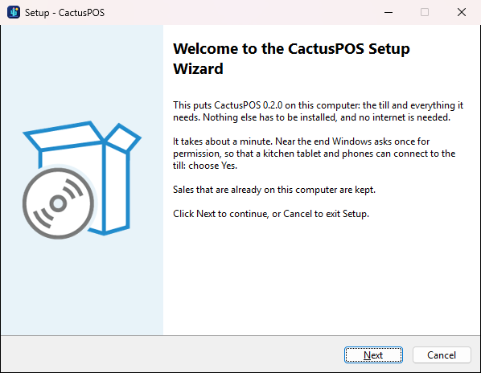
- Leave the box Start CactusPOS by itself when this computer is switched on ticked, and click Next. The installation starts; it takes about a minute.
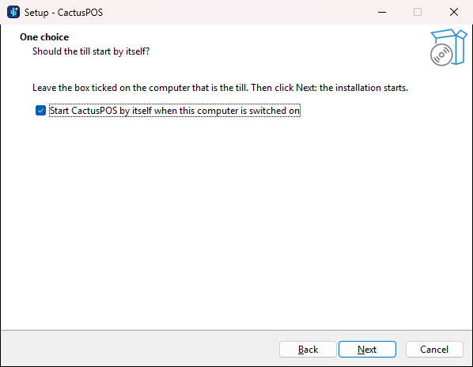
- After a short while a message says One more step. Click OK. Windows then asks Do you want to allow this app to make changes to your device? Click Yes.
This is what lets a kitchen tablet and phones on your own WiFi reach the till. Nothing is opened to the internet. If you click No, the till still works on the laptop, but tablets cannot connect. You can fix that later by running the setup file again.
- Click Finish. The till opens.
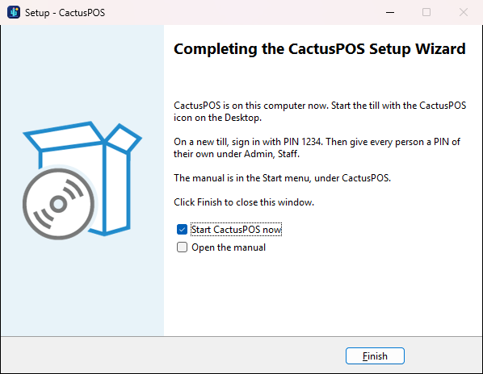
What the setup put on your computer
| Where | What |
|---|---|
| Desktop | The CactusPOS icon. This is how you start the till. |
| Start menu, under CactusPOS | The till, the kitchen screen and the pickup board on this computer; Connect a tablet or phone; Restore a backup; and this manual in English and Dutch. |
| When Windows starts | The till opens by itself after you sign in to Windows (unless you unticked the box). |
| Your sales | Kept apart from the program, in the folder AppData\Local\CactusPOS of your Windows account. Updating or removing CactusPOS never touches them. |
4. The first time: making it yours
A new till comes with an example menu and two example PIN codes. Go through these steps once, before the first real sale.
Sign in
The till asks for a PIN. On a new till the owner's PIN is 1234. Tap the digits and then Sign in.
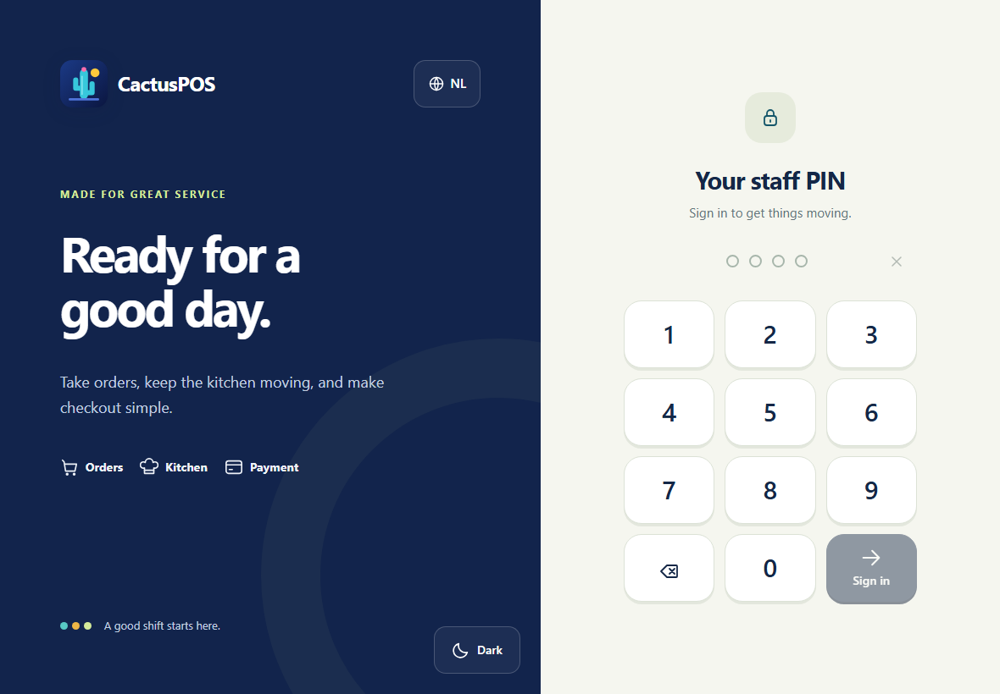
Give everyone a PIN of their own
The example PINs 1234 (owner) and 1111 (staff) are the same on every new CactusPOS. Change both before real use. The till keeps reminding you on the Admin page until you have.
- Tap Admin at the top, then Staff.
- Tap a person. Type their real name and a New PIN of 4 to 8 digits. Tap Save.
- With Add person you add someone. Choose the role: an Owner can open Admin and change the menu, prices, staff and tax. Staff can take orders and use the kitchen screen.
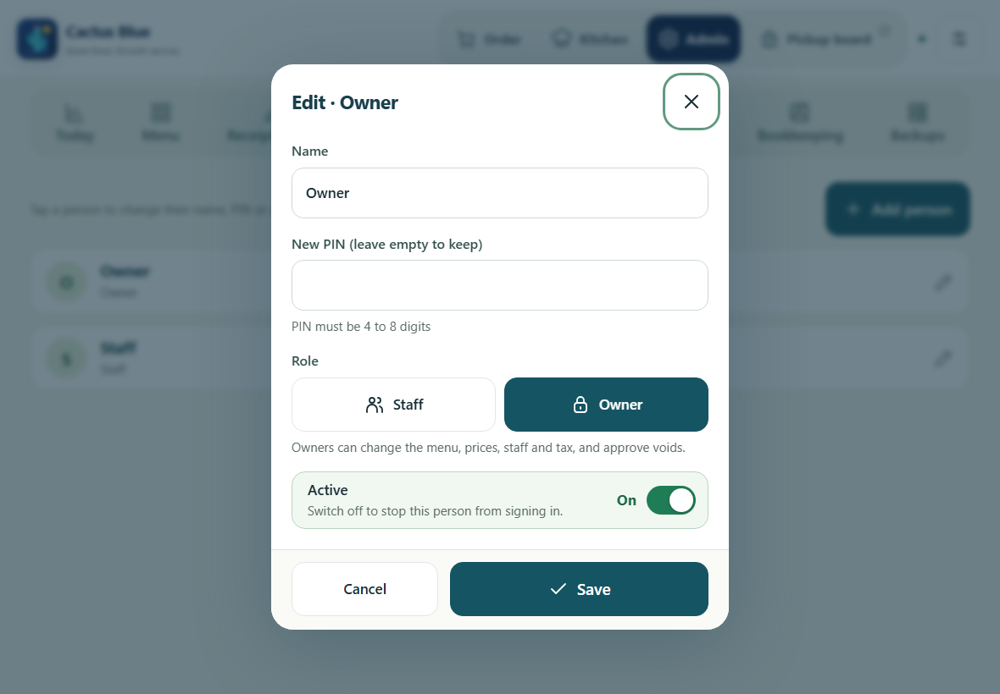
Write the owner's PIN down and keep it somewhere safe. If nobody knows an owner PIN any more, the person who helps you with CactusPOS has to reset it.
Your business details
Admin › Business. Fill in the business name, the CRIB number (it is printed on every receipt), address and phone, and the line at the bottom of the receipt. Choose the language of the receipt. Tap Save.
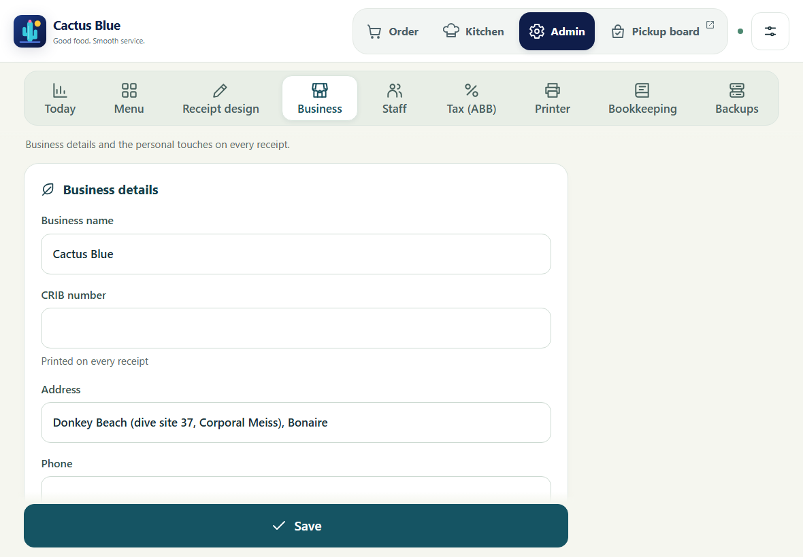
Tax (ABB)
Admin › Tax (ABB). The prices on your menu include ABB; the till works out how much ABB is in each sale. Ask your accountant which rate applies to what you sell. When a rate is right, tap Mark verified. Until then the page shows Not verified as a reminder.
Your menu
Admin › Menu. The row at the top holds the categories (Burgers, Drinks). Below it are the items of the category you tapped.
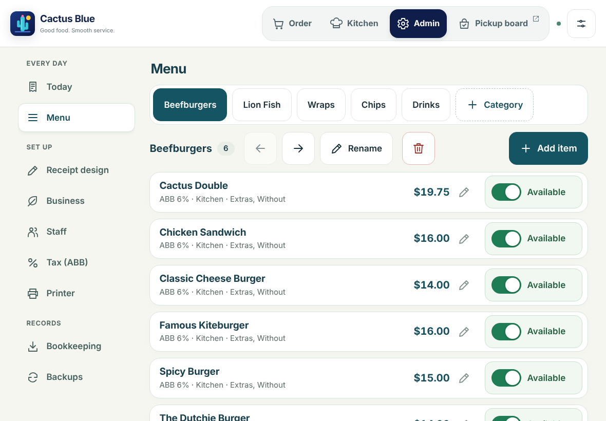
- Change an item: tap it. You can change the name, the description, the price, the tax category and the options (extras such as cheese, or a choice such as which drink).
- New item: Add item. New category: Category.
- Sold out: switch Available off. On the till the item then says Sold out and cannot be tapped. Switch it on again when you have it back.
- A price that changes every day (catch of the day): choose Market price: ask at the counter for that item. The till then asks for the price each time.
The receipt
Admin › Receipt design. Pick a style, add your logo, a thank-you line, or a QR code for your WiFi or website. The preview on the right shows the receipt as you change it. Tap Publish design to start using it.
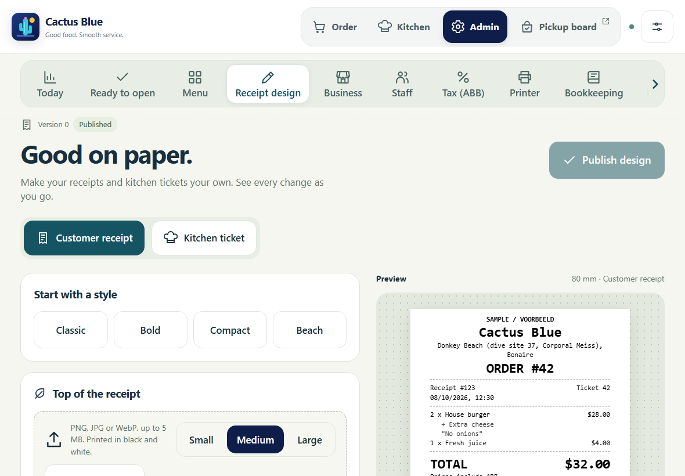
The receipt printer
Without a receipt printer the till works too. Tap Receipt after a payment and Windows shows its print window, with the printers that are installed in Windows.
With a network receipt printer: Admin › Printer. Switch Use receipt printer on, type the printer's address (a number such as 192.168.1.50; most printers print it on their self-test page), choose the paper width, and tap Save and print test page. From then on a receipt prints by itself with every payment, as long as Print receipt when paid is on.
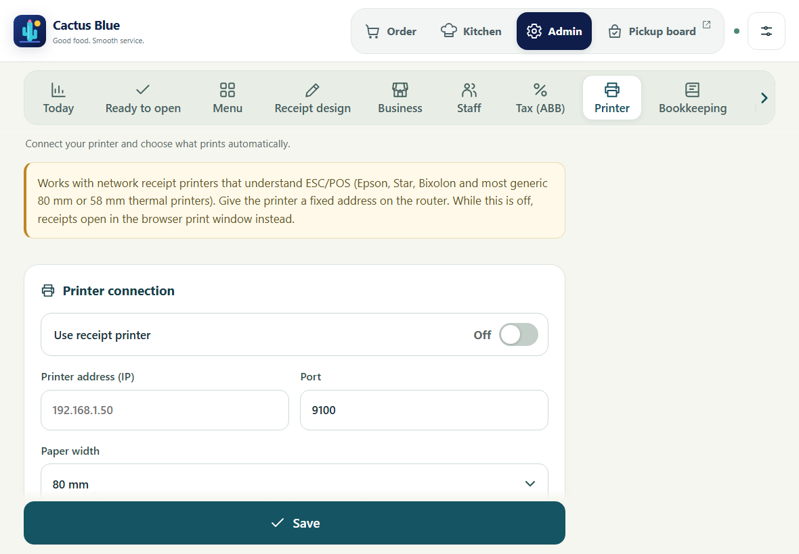
Language and look of the screens
Tap the button with the sliders at the top right (Screen tools). There you choose English or Nederlands, a light or dark screen, Sunlight mode for outdoors, and you sign out. Every screen (laptop, tablet, phone) remembers its own choice.
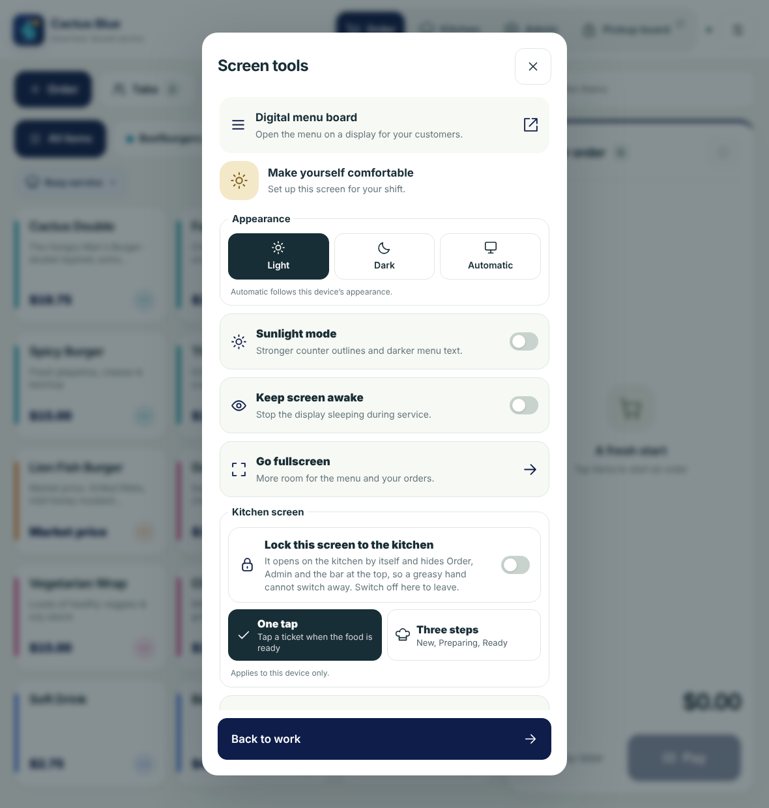
5. Taking an order and getting paid
Start the till with the CactusPOS icon on the Desktop and sign in with your PIN. You are on the Order screen: the menu on the left, the order on the right.
Before opening, and learning the till
The owner can open Admin › Ready to open to check the server, kitchen connection, network printer, recent backup copy, business/CRIB, tax verification and example PINs. Tap Check again after fixing a warning. A reachable printer still needs paper and a real print test.
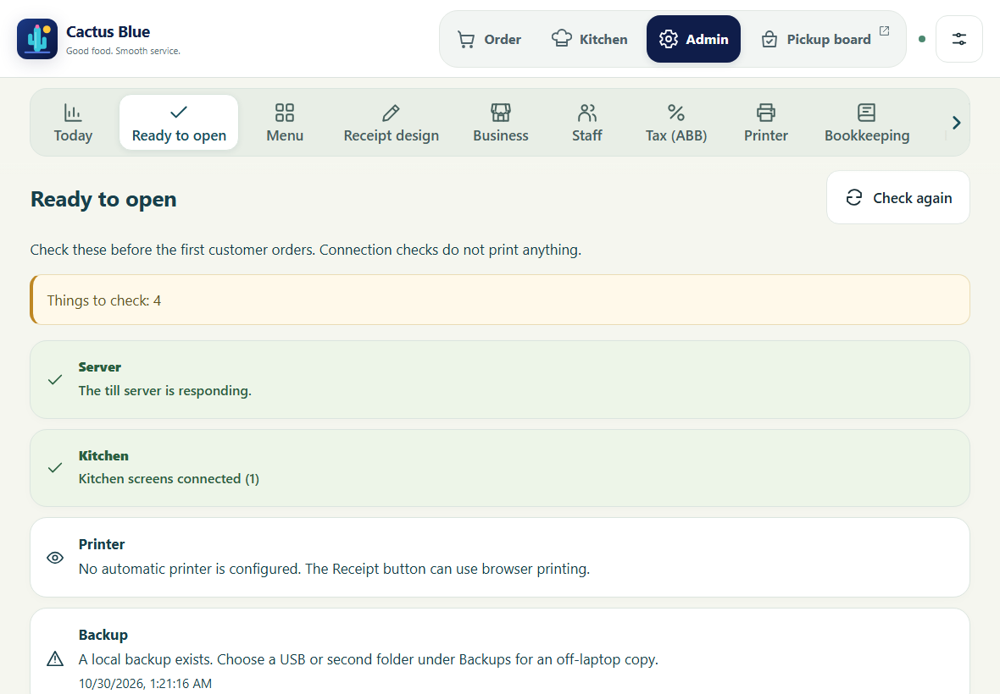
For sample orders, choose Screen tools › Practice mode and confirm. The yellow PRACTICE MODE banner must stay visible. Practice uses a separate database and receipt counter; real printers, the cash drawer, bookkeeping exports/posting and external backup copies are off. The first start copies the current menu and setup; later live changes are not copied again. On another device open /practice/kitchen or /practice/pos. Use Android app 0.2.0 or newer. Finish practicing with Return to live till and confirm; make sure the yellow banner is gone before real sales.
If the app closes during an order
The unfinished cart is saved on this device for the signed-in staff member. Reopening it restores the cart; check the current prices before sending. After an interrupted send, use Check confirmation or Retry original send. The original request is reused so a lost reply does not create another order. Review the recovered order before continuing. Already paid means do not charge again. If payment is not confirmed, check the separate card terminal before recording it. A browser-storage warning means this device cannot keep a draft.
- Tap what the guest wants. Tap a category to see less at once, or type in Find anything on the menu.
- Choose the options when the till asks (extras, without tomato, which drink) and tap Add to order.
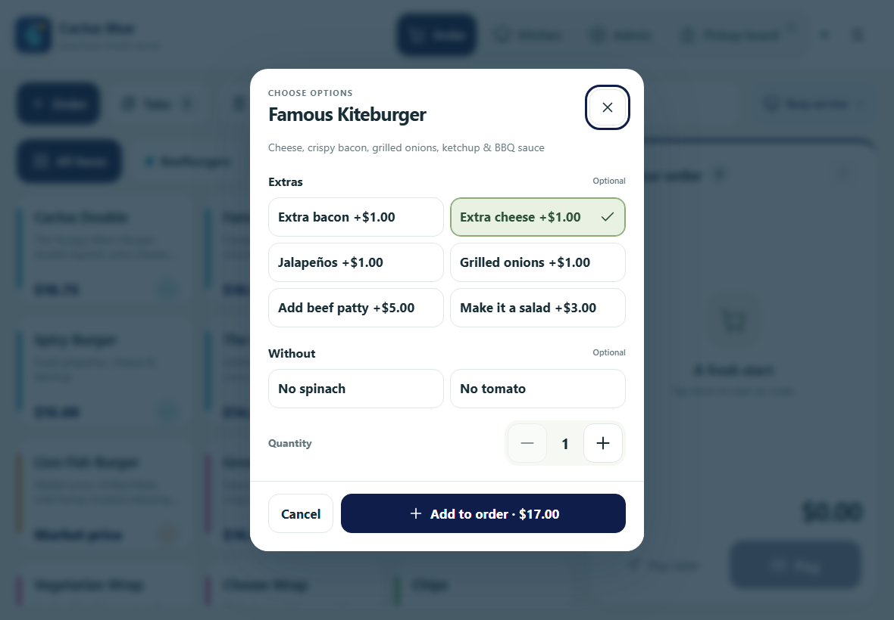
- Check the order on the right. With + and − you change how many; at 0 the line disappears. The bin at the top empties the whole order (Undo brings it back). You can type a note for the kitchen under Order note.
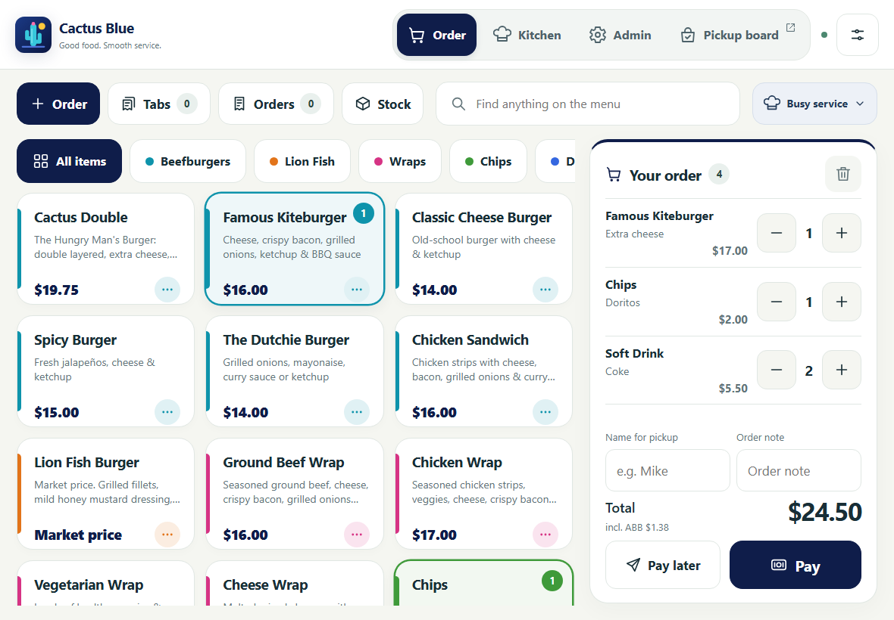
- Tap Pay.
Paying with cash
- Cash is already chosen. Tap what the guest gives you: Exact, one of the notes ($20, $50), or type the amount on the number pad.
- The till shows the Change.
- Tap Confirm payment.
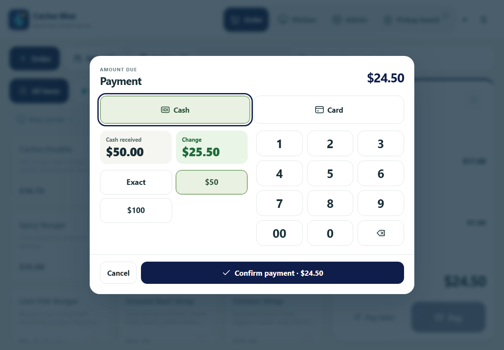
Paying by card
- Tap Card.
- Take the payment on your card machine first. The till does not talk to the card machine; it only records that this sale was paid by card.
- If the guest tipped on the card machine, tap the tip. You may type the reference from the card slip.
- Tap Confirm payment.
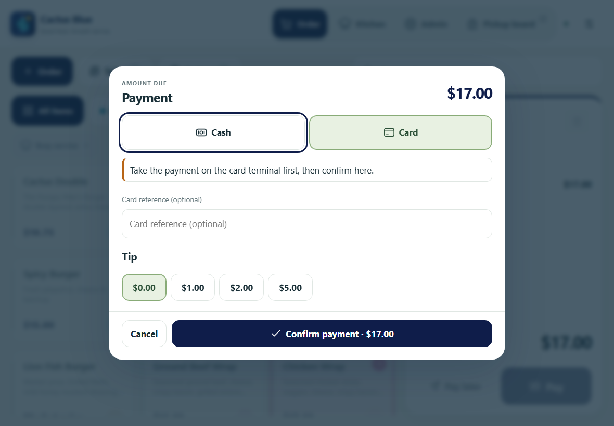
Done
The till shows Paid with the order number. Tell the guest the number. Tap Receipt if the guest wants one, then Next order.
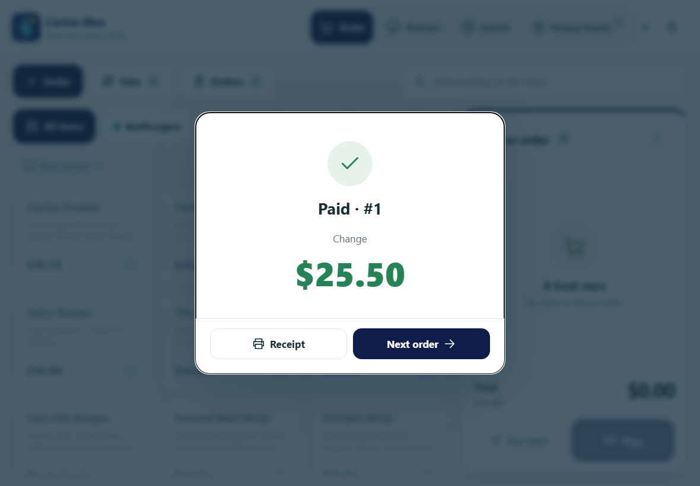
Busy service or calm service
The button above the menu says Busy service or Calm service. Tap it to change.
- Busy service: every order goes to the kitchen screen and the pickup board. Use it when someone else is cooking.
- Calm service: orders skip both screens. Use it when you take the order and make it yourself.
6. Pay later, tabs, and fixing mistakes
Pay later
When a guest eats first and pays afterwards, tap Pay later instead of Pay. The order is sent to the kitchen and stays open until it is paid.
Type a name and the button becomes Open tab for Mike. With a name the guest can order more on the same bill later.
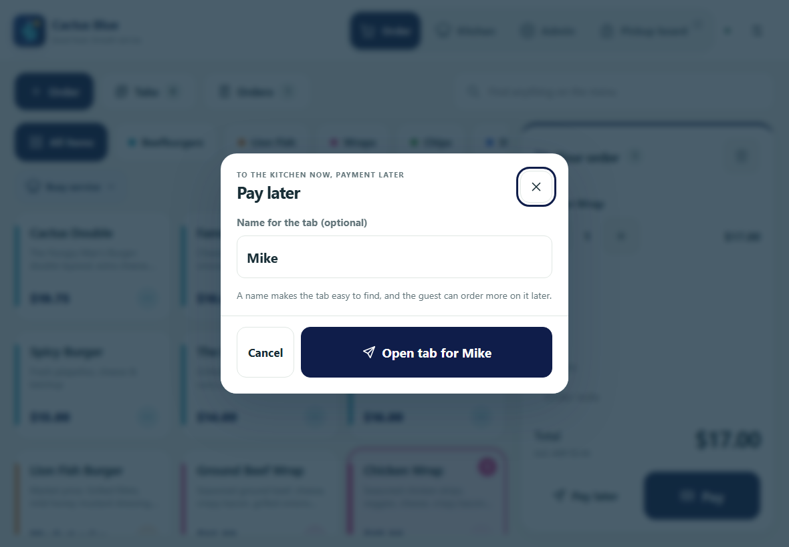
Tabs
Tap Tabs at the top left to see every open bill. Tap one to open it:
- Add items: the guest orders more. Tap the items and then Add to Mike.
- Print bill: a bill to show the guest before paying.
- Pay: the guest pays the whole tab.
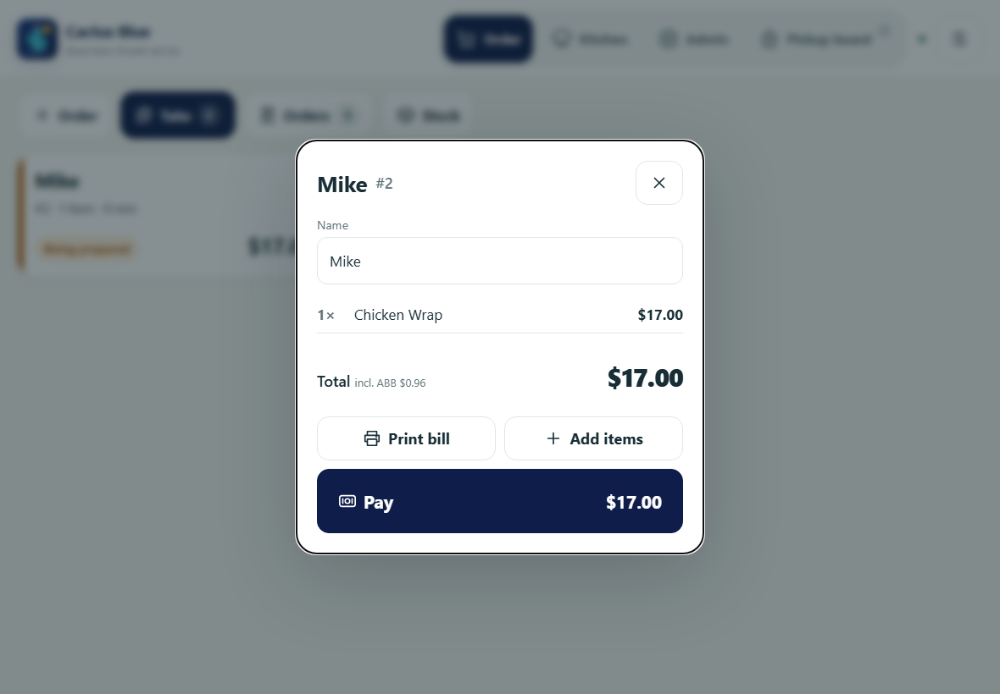
Today's orders
Tap Orders. To pay shows what is still open; All today shows everything.
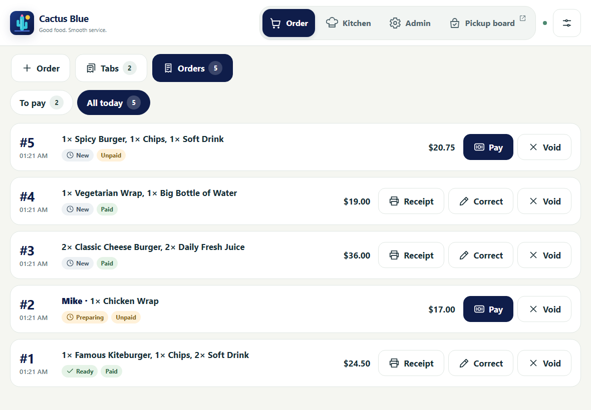
| Button | What it does |
|---|---|
| Pay | Take the payment for an order that is still open. |
| Receipt | Print the receipt again. |
| Correct | Fix a sale that is already paid: a wrong item, a wrong number, or cash that should have been card. Change it, choose what went wrong, and tap Save correction. The till tells you how much to give back or collect. |
| Void | Cancel an order completely. Type the reason. |
An owner can always correct and void. Someone signed in as Staff needs the owner's PIN to correct a sale, and to void an order that is already paid or being prepared.
Nothing is ever deleted. A voided or corrected sale stays in the records, marked as such, with the reason and who did it. That is what the tax office expects from a till.
7. The kitchen screen and the pickup board
Kitchen
Tap Kitchen at the top, or open it on a tablet by the grill (chapter 8). New orders appear by themselves, with a sound.
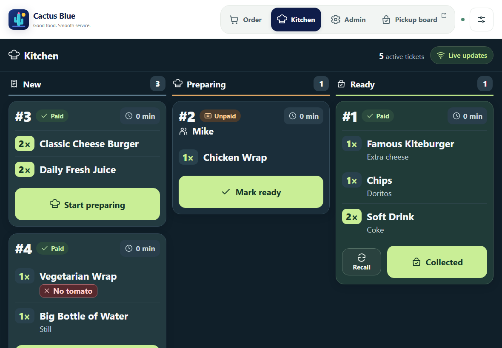
- A new order is in the column New. Tap Start preparing when you begin.
- Tap Mark ready when the food is done. The number moves to Ready, also on the pickup board.
- Tap Collected when the guest has it. The order leaves the screen.
Tapped too soon? Recall puts a ready order back to Preparing, and Undo at the top takes back your last tap. Each ticket shows how many minutes it has been waiting, and changes colour after 5 and after 10 minutes.
Pickup board
A screen for your guests: the numbers that are being prepared on the left, the numbers that are ready on the right. Tap Pickup board at the top; it opens in a window of its own. It needs no PIN, so it can run all day on a tablet or TV that guests can see.
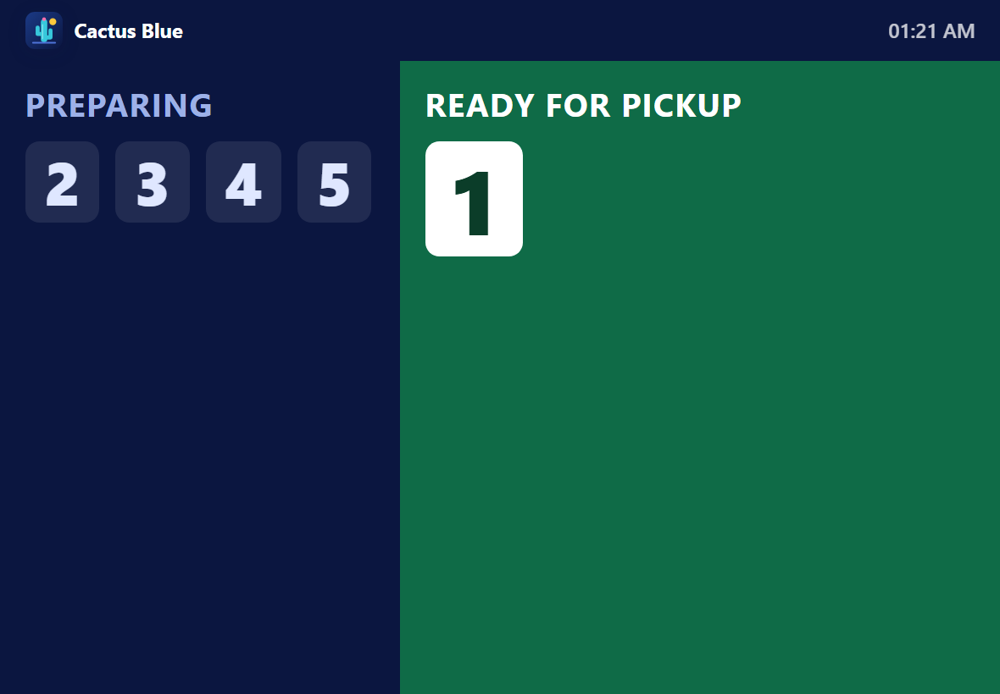
Menu board
Under Screen tools (the sliders button) you find Digital menu board: your menu with prices, for a TV or tablet facing the guests. It follows the menu in Admin, so a new price shows there by itself.
8. Connecting a tablet or a phone
The tablet by the grill shows the kitchen screen. A phone can take orders at the tables. Both are simply a web browser that opens an address on the laptop.
- Connect the tablet to the same WiFi as the laptop. Not a guest network: guest networks keep devices apart.
- On the laptop, open the Start menu, then CactusPOS, then Connect a tablet or phone. With local discovery available, use
http://cactus.local/kitchen. The window also shows an IP fallback, for examplehttp://192.168.1.20:3000/kitchen. - On the tablet, open the web browser (Chrome or Safari) and type the address. If the local name does not open, use the IP fallback. The Android CactusPOS app can also save the address and chosen screen under Connection.
- Sign in with your PIN.
- Keep it handy: in the browser's menu choose Add to Home screen. The tablet then has an icon that opens the kitchen screen directly.
| Screen | The address ends with |
|---|---|
| Kitchen | /kitchen |
| Taking orders | /pos |
| Pickup board for guests (no PIN) | /pickup |
Good to know
- The laptop has to stay on. When it sleeps, the other screens lose the till. In Windows, open Settings › System › Power (on Windows 10: Power & sleep) and set the laptop to never sleep while it is plugged in.
- No router in the truck? Switch on the laptop's Mobile hotspot (Windows Settings › Network & internet › Mobile hotspot) and connect the tablet to it. Then look up the address again with Connect a tablet or phone.
- The address stopped working after a few days. The router gave the laptop another number. Look up the new address with Connect a tablet or phone. To stop it from happening, ask whoever manages the router to give the laptop a fixed address.
- The tablet's screen goes dark. Set the tablet's own screen timeout to its longest value, or to stay on while charging.
- The kitchen screen says Live updates in green when it is connected, and Reconnecting when it has lost the laptop. It reconnects by itself.
9. Closing the day
Admin › Today shows the day so far: sales, number of orders, the ABB in them, cash and card, and what sold best.
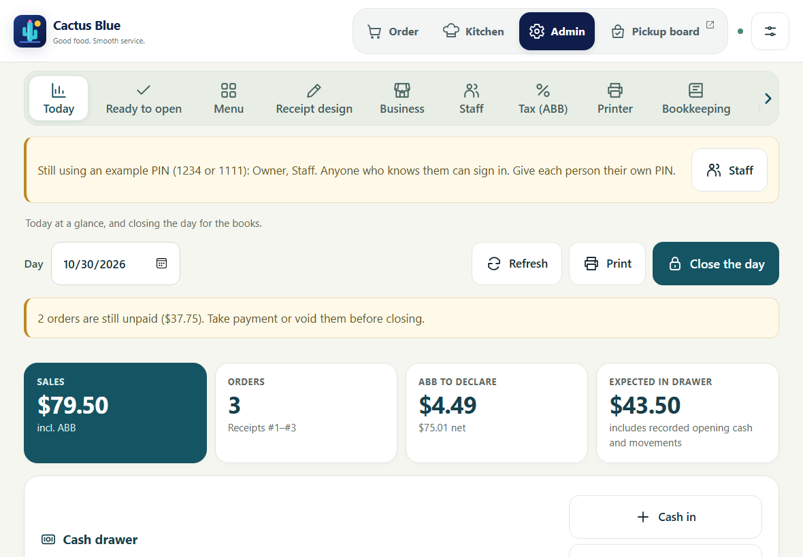
- Finish the open orders first. The page warns when orders are still unpaid. Take the payment, or void them.
- Review sales before settlement. In the receipt list on this page, find the sale and tap Correct to fix items, quantities or payment method. Enter a reason. The original receipt stays on record and a linked replacement is created. Check any card-terminal refund or extra charge yourself.
- Check Cash drawer. Record the money present each morning with Cash in and reason Opening float. Record other top-ups and withdrawals with Cash in / Cash out, amount and reason. Reverse entry adds an equal opposite entry when a record was wrong. Cash entries show who recorded them; they change the drawer balance, not sales or ABB. Open drawer is available only with a configured compatible printer/drawer.
- Tap Close the day.
- Count all cash physically in the drawer, including the opening float, and type the amount. Expected cash is cash sales plus cash-in minus cash-out. Record the opening float first so it is included. You may leave the count empty if you did not count.
- Tap Close day. The day is stored as a numbered Z report.
- Print prints the day report, if you want it on paper.
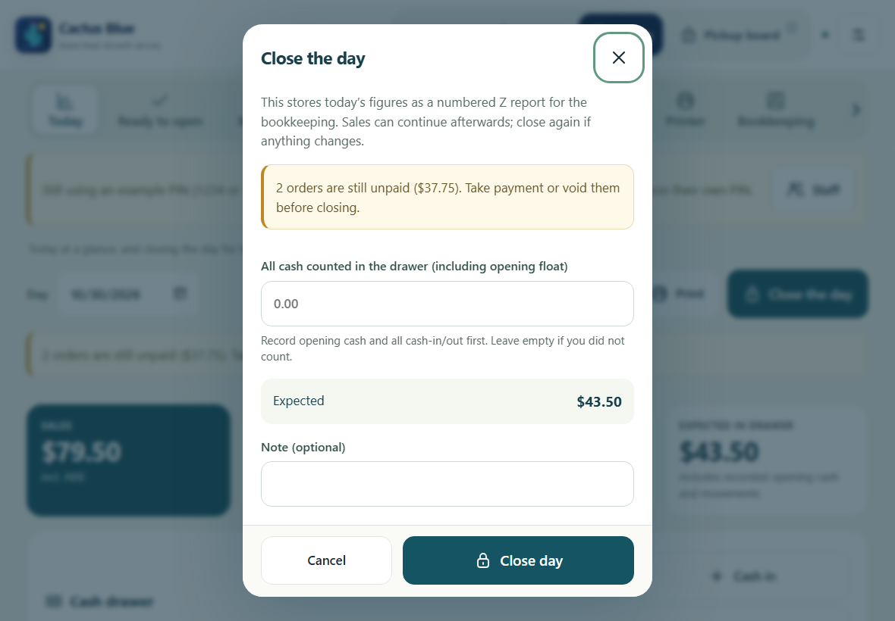
You can keep selling after closing. If something changes afterwards, the page says so; tap Close again to store the new figures.
If sales or cash entries change while you count, closing is refused and the figures refresh. Review and recount before closing again. When a cash-entry reply is interrupted, use Check confirmation or Retry original entry; do not move the physical cash again. Closed reports keep their original cash journal and count basis.
For the accountant
Admin › Bookkeeping. Choose the dates and download Daily sales (CSV): one line per closed day with sales, ABB per rate, cash, card and tips. Any accountant and any spreadsheet program can open that file.
10. Backups
CactusPOS makes a copy of all your sales by itself: every time it starts, when you close the day, and every half hour while there is something new. You do not have to do anything for that.
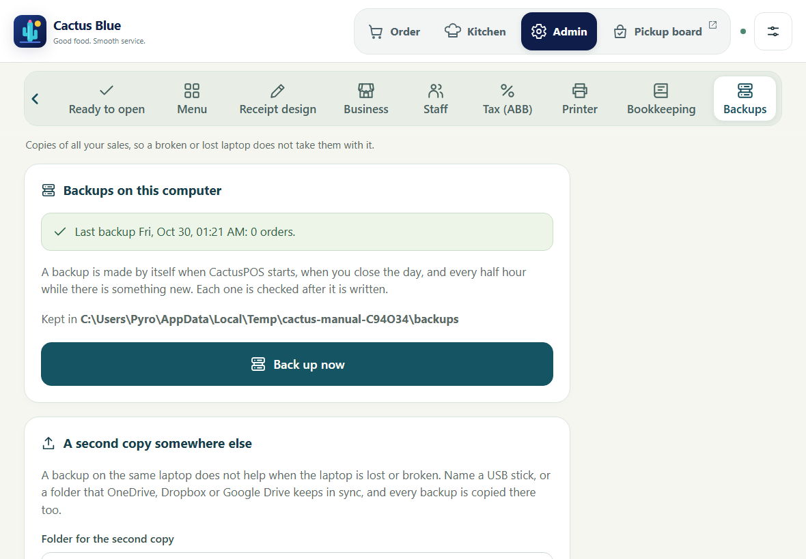
Set up a second copy: do this once
Those copies are on the same laptop. They do not help when the laptop is stolen, falls, or breaks. Give CactusPOS a second place to put them.
- Put a USB stick in the laptop and leave it there. Or use a folder that OneDrive, Google Drive or Dropbox keeps in sync.
- Admin › Backups. Under A second copy somewhere else, type the folder, for example
E:\CactusPOS backups. The folder has to exist. Tap Save. - Tap Back up now and check that a file appears in that folder.
Putting a backup back
You need this when the laptop was replaced, or when the data got damaged.
- On a new laptop: install CactusPOS first (chapter 3).
- Open the Start menu, then CactusPOS, then Restore a backup. A black window with text opens.
- Type 1 for the newest backup on this computer, or 2 to choose a file on a USB stick. Press Enter.
- It shows how many orders the backup holds and how many are on the computer now, and it warns when the backup is older. Type yes and press Enter to go ahead.
The data that is replaced is not thrown away. It is moved to a folder of its own, so the step can be undone.
Try it once before you need it. Make a backup, put it back, and check that today's orders are still there.
11. Updating, moving and removing
A new version
- Close the till window.
- Double-click the new setup file and go through the same windows as the first time.
Your sales, menu, PINs and settings stay exactly as they were. The other screens reconnect by themselves; when a screen says an update is ready, tap Reload when ready.
A new laptop
Install CactusPOS on the new laptop, then put your newest backup back (chapter 10). Look up the new address for the tablets with Connect a tablet or phone.
Removing CactusPOS
In Windows, open Settings › Apps › Installed apps (on Windows 10: Apps & features), find CactusPOS and choose Uninstall. The program and its icons are removed.
Your sales records are kept, in the folder AppData\Local\CactusPOS of your Windows account. Delete that folder yourself only when you are sure you no longer need them. A business has to keep its records for years.
12. When something is wrong
| What you see | What to do |
|---|---|
| Windows warns about the setup file | See chapter 3, step 2: More info, then Run anyway. |
| The setup says this version of Windows is not supported | CactusPOS needs Windows 10 (version 1809 or newer) or Windows 11, 64-bit. Run Windows Update, or use a newer laptop. |
| I closed the till window | Double-click the CactusPOS icon on the Desktop. Nothing is lost: the till keeps running behind the scenes, so the kitchen keeps working. |
| The window says CactusPOS did not start | Try the icon again. Then restart the laptop. If it still does not start, ask the person who helps you with CactusPOS. |
| A message about port 3000 being used by another program | Another program on the laptop uses the same door as the till. Restart the laptop. If it comes back, ask the person who helps you with CactusPOS. |
| Wrong PIN, or Too many attempts | Wait 30 seconds and try again. An owner can give anyone a new PIN under Admin › Staff. |
| The screens are in the wrong language | The sliders button at the top right (Screen tools) › Language. On the sign-in screen: the button NL or EN. |
| The tablet cannot open the address | Same WiFi as the laptop, and not a guest network? Is the laptop on and awake, and is the till running? Typed exactly, with http:// in front? Then run the setup file again and answer Yes to the question from Windows. |
| The address worked yesterday and not today | The laptop got another address. Look it up again: Start menu › CactusPOS › Connect a tablet or phone. |
| The kitchen screen says Reconnecting | It lost the laptop for a moment and tries again by itself. If it stays that way: is the laptop asleep, or is the WiFi down? |
| Windows shows a Windows Security Alert about Node.js | Node.js is the engine inside CactusPOS. Tick both boxes and choose Allow access. |
| No receipt comes out | Admin › Printer. Is the printer on, with paper, and is the address right? Tap Save and print test page. Under Recent print jobs, tap Try failed jobs again. |
| I cannot tap the item I need | It is switched off as sold out. Admin › Menu, switch Available on. |
| There are two till windows | Close one. Both show the same till. |
When you ask for help, say what you were doing and what the screen said, word for word, or send a photo of the screen. That saves a lot of guessing.
One page to keep by the till
In the morning
- Switch the laptop on and sign in to Windows. The till opens by itself. (If not: the CactusPOS icon on the Desktop.)
- Sign in with your PIN.
- Switch the kitchen tablet on. It should say Live updates in green.
- Something sold out today? Admin › Menu, switch Available off.
Every order
- Tap the items. Choose the options. Add to order.
- Pay.
- Cash: tap what you received, give the change shown. Card: card machine first, then tap Card.
- Confirm payment. Tell the guest the order number.
- Next order.
In the kitchen
Start preparing › Mark ready › Collected
A mistake
Orders › All today › Correct (wrong item or payment) or Void (cancel it all).
At the end of the day
- Admin › Today. Nothing unpaid left?
- Close the day. Count the cash, type it, Close day.
- Shut the laptop down the normal way.
For the tablet
Start menu › CactusPOS › Connect a tablet or phone shows the address to type.